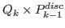
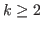

We present -BFBT, an approximation for the inverse Schur complement of a Stokes system with strongly heterogeneous viscosity.
When used as part of a Schur complement preconditioner, we observe robust convergence rates for Stokes problems with smooth but strongly varying (up to 10 orders of magnitude) viscosities, optimal algorithmic scalability with respect to mesh refinement, and a merely mild dependence on the polynomial order of high-order finite element discretizations (

, order
).For certain problems, -BFBT significantly improves Stokes solver convergence over the widely used Schur approximation with an inverse viscosity weighted pressure mass matrix. Using detailed numerical experiments, we discuss modifications to -BFBT at Dirichlet boundaries, which decrease the number of iterations.
The overall algorithmic performance of the Stokes solver is governed by the efficacy of -BFBT as a Schur complement approximation and, in addition, by our parallel hybrid spectral-geometric-algebraic multigrid (HMG) method, used for approximating the inverses of the viscous block and variable-coefficient pressure Poisson operators within -BFBT.
Building on the scalability of HMG, our Stokes solver achieves parallel weak scalability of 90% for a more than 600-fold increase from 48 to all 30,000 cores of TACC's Lonestar 5 supercomputer.